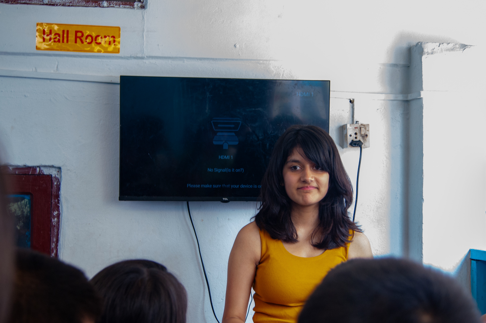

Session 03 / June 26, 2026
BNKS 1
A documented visit to BNKS 1 on June 26, 2026.

On June 26, 2026, See The Voices visited BNKS 1. This page records the visit name and date supplied with the media archive.
Coming back made the learning feel more familiar. We could pick up where we left off, revisit signs, and notice the confidence that had grown.